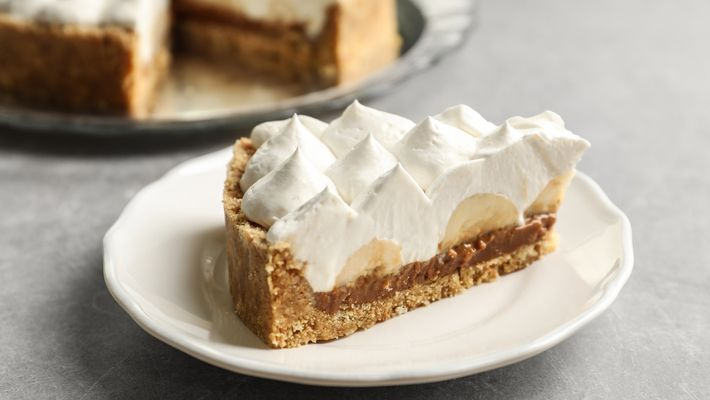

Banoffee

Preparo
30 min
Rendimento
12 porções
Favoritos
302
Ingredientes
- 400 g de doce de leite pronto de boa qualidade (escolha um que seja bem firme)
- 10 bananas cortadas em rodelas
- 400 g de nata (chantilly, se preferir)
- 1 pacote de biscoito maizena triturado (tipo farinha, bem fininho)
- 200 g de margarina culinária
- 1 colher de chá de canela em pó para polvilhar
Modo de preparo
- Misture o biscoito triturado com a margarina culinária, com a ponta dos dedos, até formar uma massa lisa. Forre o fundo de uma forma de abrir (fundo falso), e asse por apenas 10 minutos, em forno preaquecido a 180°C. Retire. Deixe a massa esfriar.
- Coloque o doce de leite sobre a massa já fria. Alise para ficar plano.
- Pique as bananas em rodelas, e distribua-as sobre o doce de leite.
- Coloque a nata por cima (se preferir, pode batê-la para deixar em ponto de chantilly), e alise.
- Pegue uma peneira pequena, e espalhe a canela por cima passando-a pela peneira, para que pulverize melhor por toda a torta.
- Deixe na geladeira por 3 horas antes de desenformar.